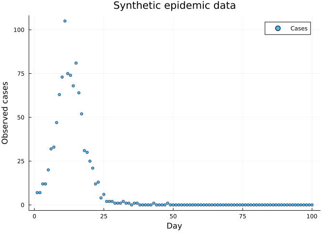
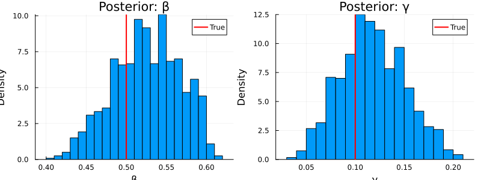
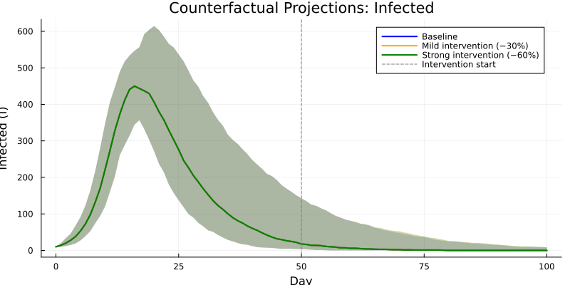
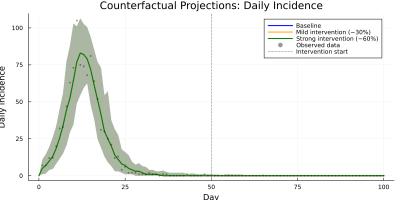
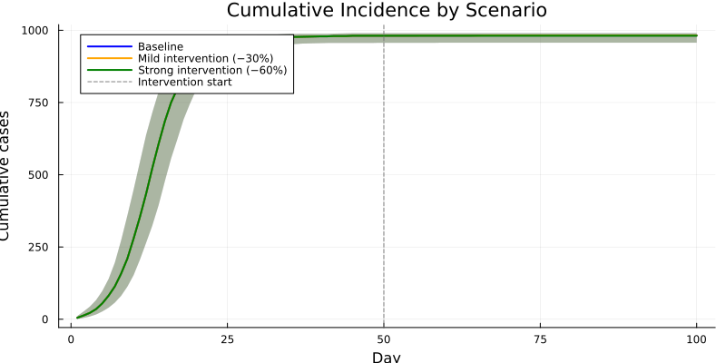

Counterfactual Projections from Posterior
Introduction
After fitting a model to data, a key use case is counterfactual analysis: “what would have happened under a different intervention?” This vignette shows how to:
- Fit a stochastic SIR model to observed case data using particle filter MCMC
- Draw parameter sets from the posterior distribution
- Simulate forward under different intervention scenarios
- Visualise projections with uncertainty (credible intervals)
This builds on the inference workflow from Vignettes 05–06 and the time-varying parameter machinery from Vignette 08.
using Odin
using Plots
using Statistics
using RandomModel Definition
We use the same stochastic SIR with incidence tracking and Poisson observation model as in Vignettes 05–06:
sir = @odin begin
update(S) = S - n_SI
update(I) = I + n_SI - n_IR
update(R) = R + n_IR
initial(S) = N - I0
initial(I) = I0
initial(R) = 0
initial(incidence, zero_every = 1) = 0
update(incidence) = incidence + n_SI
p_SI = 1 - exp(-beta * I / N * dt)
p_IR = 1 - exp(-gamma * dt)
n_SI = Binomial(S, p_SI)
n_IR = Binomial(I, p_IR)
cases = data()
cases ~ Poisson(incidence + 1e-6)
beta = parameter(0.5)
gamma = parameter(0.1)
I0 = parameter(10)
N = parameter(1000)
endOdin.DustSystemGenerator{var"##OdinModel#277"}(var"##OdinModel#277"(4, [:S, :I, :R, :incidence], [:beta, :gamma, :I0, :N], false, false, true, false, false, Dict{Symbol, Array}()))Generate Synthetic Data
Simulate a 100-day epidemic to serve as our “observed” data:
true_pars = (beta=0.5, gamma=0.1, I0=10.0, N=1000.0)
times = collect(0.0:1.0:100.0)
obs_result = simulate(sir, true_pars; times=times, dt=1.0, seed=42)
observed = Int.(round.(obs_result[4, 1, 2:end]))
scatter(1:100, observed, xlabel="Day", ylabel="Observed cases",
title="Synthetic epidemic data", label="Cases", ms=3, alpha=0.7)
Set Up Inference
data = ObservedData(
[(time=Float64(t), cases=Float64(c)) for (t, c) in zip(times[2:end], observed)]
)
filter = Likelihood(sir, data; n_particles=200, dt=1.0, seed=42)
packer = Packer([:beta, :gamma];
fixed=(I0=10.0, N=1000.0))
likelihood = as_model(filter, packer)
prior = @prior begin
beta ~ Gamma(2.0, 0.25)
gamma ~ Gamma(2.0, 0.05)
end
posterior = likelihood + priorMontyModel{Odin.var"#monty_model_combine##0#monty_model_combine##1"{MontyModel{Odin.var"#dust_likelihood_monty##0#dust_likelihood_monty##1"{DustFilter{var"##OdinModel#277", Float64, @NamedTuple{cases::Float64}}, MontyPacker}, Nothing, Nothing, Nothing}, MontyModel{var"#7#8", var"#9#10"{var"#7#8"}, var"#11#12", Matrix{Float64}}}, Odin.var"#monty_model_combine##4#monty_model_combine##5"{Odin.var"#monty_model_combine##0#monty_model_combine##1"{MontyModel{Odin.var"#dust_likelihood_monty##0#dust_likelihood_monty##1"{DustFilter{var"##OdinModel#277", Float64, @NamedTuple{cases::Float64}}, MontyPacker}, Nothing, Nothing, Nothing}, MontyModel{var"#7#8", var"#9#10"{var"#7#8"}, var"#11#12", Matrix{Float64}}}}, Nothing, Matrix{Float64}}(["beta", "gamma"], Odin.var"#monty_model_combine##0#monty_model_combine##1"{MontyModel{Odin.var"#dust_likelihood_monty##0#dust_likelihood_monty##1"{DustFilter{var"##OdinModel#277", Float64, @NamedTuple{cases::Float64}}, MontyPacker}, Nothing, Nothing, Nothing}, MontyModel{var"#7#8", var"#9#10"{var"#7#8"}, var"#11#12", Matrix{Float64}}}(MontyModel{Odin.var"#dust_likelihood_monty##0#dust_likelihood_monty##1"{DustFilter{var"##OdinModel#277", Float64, @NamedTuple{cases::Float64}}, MontyPacker}, Nothing, Nothing, Nothing}(["beta", "gamma"], Odin.var"#dust_likelihood_monty##0#dust_likelihood_monty##1"{DustFilter{var"##OdinModel#277", Float64, @NamedTuple{cases::Float64}}, MontyPacker}(DustFilter{var"##OdinModel#277", Float64, @NamedTuple{cases::Float64}}(Odin.DustSystemGenerator{var"##OdinModel#277"}(var"##OdinModel#277"(4, [:S, :I, :R, :incidence], [:beta, :gamma, :I0, :N], false, false, true, false, false, Dict{Symbol, Array}())), Odin.FilterData{@NamedTuple{cases::Float64}}([1.0, 2.0, 3.0, 4.0, 5.0, 6.0, 7.0, 8.0, 9.0, 10.0 … 91.0, 92.0, 93.0, 94.0, 95.0, 96.0, 97.0, 98.0, 99.0, 100.0], [(cases = 7.0,), (cases = 7.0,), (cases = 12.0,), (cases = 12.0,), (cases = 20.0,), (cases = 32.0,), (cases = 33.0,), (cases = 47.0,), (cases = 63.0,), (cases = 73.0,) … (cases = 0.0,), (cases = 0.0,), (cases = 0.0,), (cases = 0.0,), (cases = 0.0,), (cases = 0.0,), (cases = 0.0,), (cases = 0.0,), (cases = 0.0,), (cases = 0.0,)]), 0.0, 200, 1.0, 42, false, nothing), MontyPacker([:beta, :gamma], [:beta, :gamma], Symbol[], Dict{Symbol, Tuple}(), Dict{Symbol, UnitRange{Int64}}(:beta => 1:1, :gamma => 2:2), 2, (I0 = 10.0, N = 1000.0), nothing)), nothing, nothing, nothing, Odin.MontyModelProperties(false, false, true, false)), MontyModel{var"#7#8", var"#9#10"{var"#7#8"}, var"#11#12", Matrix{Float64}}(["beta", "gamma"], var"#7#8"(), var"#9#10"{var"#7#8"}(var"#7#8"()), var"#11#12"(), [0.0 Inf; 0.0 Inf], Odin.MontyModelProperties(true, true, false, false))), Odin.var"#monty_model_combine##4#monty_model_combine##5"{Odin.var"#monty_model_combine##0#monty_model_combine##1"{MontyModel{Odin.var"#dust_likelihood_monty##0#dust_likelihood_monty##1"{DustFilter{var"##OdinModel#277", Float64, @NamedTuple{cases::Float64}}, MontyPacker}, Nothing, Nothing, Nothing}, MontyModel{var"#7#8", var"#9#10"{var"#7#8"}, var"#11#12", Matrix{Float64}}}}(Odin.var"#monty_model_combine##0#monty_model_combine##1"{MontyModel{Odin.var"#dust_likelihood_monty##0#dust_likelihood_monty##1"{DustFilter{var"##OdinModel#277", Float64, @NamedTuple{cases::Float64}}, MontyPacker}, Nothing, Nothing, Nothing}, MontyModel{var"#7#8", var"#9#10"{var"#7#8"}, var"#11#12", Matrix{Float64}}}(MontyModel{Odin.var"#dust_likelihood_monty##0#dust_likelihood_monty##1"{DustFilter{var"##OdinModel#277", Float64, @NamedTuple{cases::Float64}}, MontyPacker}, Nothing, Nothing, Nothing}(["beta", "gamma"], Odin.var"#dust_likelihood_monty##0#dust_likelihood_monty##1"{DustFilter{var"##OdinModel#277", Float64, @NamedTuple{cases::Float64}}, MontyPacker}(DustFilter{var"##OdinModel#277", Float64, @NamedTuple{cases::Float64}}(Odin.DustSystemGenerator{var"##OdinModel#277"}(var"##OdinModel#277"(4, [:S, :I, :R, :incidence], [:beta, :gamma, :I0, :N], false, false, true, false, false, Dict{Symbol, Array}())), Odin.FilterData{@NamedTuple{cases::Float64}}([1.0, 2.0, 3.0, 4.0, 5.0, 6.0, 7.0, 8.0, 9.0, 10.0 … 91.0, 92.0, 93.0, 94.0, 95.0, 96.0, 97.0, 98.0, 99.0, 100.0], [(cases = 7.0,), (cases = 7.0,), (cases = 12.0,), (cases = 12.0,), (cases = 20.0,), (cases = 32.0,), (cases = 33.0,), (cases = 47.0,), (cases = 63.0,), (cases = 73.0,) … (cases = 0.0,), (cases = 0.0,), (cases = 0.0,), (cases = 0.0,), (cases = 0.0,), (cases = 0.0,), (cases = 0.0,), (cases = 0.0,), (cases = 0.0,), (cases = 0.0,)]), 0.0, 200, 1.0, 42, false, nothing), MontyPacker([:beta, :gamma], [:beta, :gamma], Symbol[], Dict{Symbol, Tuple}(), Dict{Symbol, UnitRange{Int64}}(:beta => 1:1, :gamma => 2:2), 2, (I0 = 10.0, N = 1000.0), nothing)), nothing, nothing, nothing, Odin.MontyModelProperties(false, false, true, false)), MontyModel{var"#7#8", var"#9#10"{var"#7#8"}, var"#11#12", Matrix{Float64}}(["beta", "gamma"], var"#7#8"(), var"#9#10"{var"#7#8"}(var"#7#8"()), var"#11#12"(), [0.0 Inf; 0.0 Inf], Odin.MontyModelProperties(true, true, false, false)))), nothing, [0.0 Inf; 0.0 Inf], Odin.MontyModelProperties(true, false, true, false))Run MCMC
We run 500 iterations across 4 chains, discarding 200 as burn-in:
vcv = [0.0004 0.0; 0.0 0.00025]
sampler = random_walk(vcv)
initial = repeat([0.5, 0.1], 1, 4)
samples = sample(posterior, sampler, 500;
n_chains=4, initial=initial, n_burnin=200)Odin.MontySamples([0.49437823850732826 0.49437823850732826 … 0.4566291310556328 0.4563731363716816; 0.0919995187825554 0.0919995187825554 … 0.07409620491486334 0.07888417889227739;;; 0.4962022350248883 0.4962022350248883 … 0.550625010954722 0.5574132564077641; 0.0747845366225706 0.0747845366225706 … 0.17641645884129958 0.1733152749043613;;; 0.5984801605583616 0.5984801605583616 … 0.5167470684094274 0.49753620465483595; 0.18620227270881481 0.18620227270881481 … 0.08746173307235128 0.08264297727060793;;; 0.5803246915470877 0.5441785079651473 … 0.45790479627213376 0.45790479627213376; 0.16877760950164053 0.1723624073642432 … 0.0682837529525733 0.0682837529525733], [-105.93764646044522 -106.94088887900911 -107.49997246914747 -106.85816994111362; -105.93764646044522 -106.94088887900911 -107.49997246914747 -108.83687244362953; … ; -106.14921737330135 -107.90380816889471 -106.43411282825788 -105.61253299121859; -106.75477046668497 -108.20845020329413 -106.09940979794196 -105.61253299121859], [0.5 0.5 0.5 0.5; 0.1 0.1 0.1 0.1], ["beta", "gamma"], Dict{Symbol, Any}(:acceptance_rate => [0.538, 0.546, 0.588, 0.556]))Examine Posterior
posterior_beta = vec(samples.pars[1, :, :])
posterior_gamma = vec(samples.pars[2, :, :])
println("β: mean = ", round(mean(posterior_beta), digits=3),
", 95% CI = [", round(quantile(posterior_beta, 0.025), digits=3),
", ", round(quantile(posterior_beta, 0.975), digits=3), "]")
println("γ: mean = ", round(mean(posterior_gamma), digits=3),
", 95% CI = [", round(quantile(posterior_gamma, 0.025), digits=3),
", ", round(quantile(posterior_gamma, 0.975), digits=3), "]")
println("True: β = 0.5, γ = 0.1")β: mean = 0.526, 95% CI = [0.441, 0.596]
γ: mean = 0.118, 95% CI = [0.059, 0.184]
True: β = 0.5, γ = 0.1p1 = histogram(posterior_beta, bins=30, xlabel="β", ylabel="Density",
title="Posterior: β", normalize=true, label="")
vline!(p1, [0.5], label="True", color=:red, linewidth=2)
p2 = histogram(posterior_gamma, bins=30, xlabel="γ", ylabel="Density",
title="Posterior: γ", normalize=true, label="")
vline!(p2, [0.1], label="True", color=:red, linewidth=2)
plot(p1, p2, layout=(1, 2), size=(800, 300))
Define Projection Model
For forward projections we need a model with time-varying β so that we can implement interventions at a specified day. We use interpolate() with :constant mode (a step function) — see Vignette 08 for details:
sir_proj = @odin begin
update(S) = S - n_SI
update(I) = I + n_SI - n_IR
update(R) = R + n_IR
initial(S) = N - I0
initial(I) = I0
initial(R) = 0
initial(incidence, zero_every = 1) = 0
update(incidence) = incidence + n_SI
beta = interpolate(beta_time, beta_value, :constant)
p_SI = 1 - exp(-beta * I / N * dt)
p_IR = 1 - exp(-gamma * dt)
n_SI = Binomial(S, p_SI)
n_IR = Binomial(I, p_IR)
beta_time = parameter(rank=1)
beta_value = parameter(rank=1)
gamma = parameter(0.1)
I0 = parameter(10)
N = parameter(1000)
endOdin.DustSystemGenerator{var"##OdinModel#281"}(var"##OdinModel#281"(4, [:S, :I, :R, :incidence], [:beta_time, :beta_value, :gamma, :I0, :N], false, false, false, false, true, Dict{Symbol, Array}()))Define Scenarios
Three intervention scenarios that diverge at day 50:
| Scenario | β from day 0 | β from day 50 |
|---|---|---|
| Baseline | fitted β | fitted β (unchanged) |
| Mild intervention | fitted β | 70% of fitted β |
| Strong intervention | fitted β | 40% of fitted β |
scenarios = [
(name="Baseline",
beta_schedule = β -> ([0.0, 200.0], [β, β])),
(name="Mild intervention (−30%)",
beta_schedule = β -> ([0.0, 50.0], [β, β * 0.7])),
(name="Strong intervention (−60%)",
beta_schedule = β -> ([0.0, 50.0], [β, β * 0.4])),
]3-element Vector{NamedTuple{(:name, :beta_schedule)}}:
(name = "Baseline", beta_schedule = var"#16#17"())
(name = "Mild intervention (−30%)", beta_schedule = var"#18#19"())
(name = "Strong intervention (−60%)", beta_schedule = var"#20#21"())Run Counterfactual Projections
For each scenario we sample 100 parameter sets from the posterior and simulate the full epidemic trajectory. All scenarios use the same posterior draws so that differences are driven purely by the intervention:
n_proj = 100
proj_times = collect(0.0:1.0:100.0)
n_times = length(proj_times)
Random.seed!(42)
idx = rand(1:length(posterior_beta), n_proj)
results = Dict{String, NamedTuple}()
for scenario in scenarios
I_traj = zeros(n_proj, n_times)
inc_traj = zeros(n_proj, n_times)
for j in 1:n_proj
β = posterior_beta[idx[j]]
γ = posterior_gamma[idx[j]]
bt, bv = scenario.beta_schedule(β)
pars = (
beta_time = bt,
beta_value = bv,
gamma = γ,
I0 = 10.0,
N = 1000.0,
)
sys = System(sir_proj, pars; dt=1.0, seed=j)
reset!(sys)
r = simulate(sys, proj_times)
I_traj[j, :] = r[2, 1, :]
inc_traj[j, :] = r[4, 1, :]
end
results[scenario.name] = (I=I_traj, inc=inc_traj)
endPlot Infection Trajectories
colors = [:blue, :orange, :green]
p = plot(xlabel="Day", ylabel="Infected (I)",
title="Counterfactual Projections: Infected",
size=(800, 400), legend=:topright)
for (k, scenario) in enumerate(scenarios)
I_traj = results[scenario.name].I
med = [median(I_traj[:, t]) for t in 1:n_times]
lo = [quantile(I_traj[:, t], 0.025) for t in 1:n_times]
hi = [quantile(I_traj[:, t], 0.975) for t in 1:n_times]
plot!(p, proj_times, med,
ribbon=(med .- lo, hi .- med),
fillalpha=0.2, lw=2, color=colors[k],
label=scenario.name)
end
vline!(p, [50.0], ls=:dash, color=:gray, label="Intervention start")
p
The baseline (blue) reproduces the fitted epidemic. The mild (orange) and strong (green) interventions increasingly suppress the peak, with uncertainty bands reflecting posterior parameter uncertainty.
Plot Daily Incidence
Overlay the observed data to see how the counterfactual scenarios compare:
p_inc = plot(xlabel="Day", ylabel="Daily incidence",
title="Counterfactual Projections: Daily Incidence",
size=(800, 400), legend=:topright)
for (k, scenario) in enumerate(scenarios)
inc_traj = results[scenario.name].inc
med = [median(inc_traj[:, t]) for t in 1:n_times]
lo = [quantile(inc_traj[:, t], 0.025) for t in 1:n_times]
hi = [quantile(inc_traj[:, t], 0.975) for t in 1:n_times]
plot!(p_inc, proj_times, med,
ribbon=(med .- lo, hi .- med),
fillalpha=0.2, lw=2, color=colors[k],
label=scenario.name)
end
scatter!(p_inc, 1.0:100.0, Float64.(observed), ms=2, alpha=0.4,
color=:black, label="Observed data")
vline!(p_inc, [50.0], ls=:dash, color=:gray, label="Intervention start")
p_inc
Compare Cumulative Cases
p_cum = plot(xlabel="Day", ylabel="Cumulative cases",
title="Cumulative Incidence by Scenario",
size=(800, 400), legend=:topleft)
for (k, scenario) in enumerate(scenarios)
inc_traj = results[scenario.name].inc
cum_traj = cumsum(inc_traj[:, 2:end], dims=2)
days = 1.0:100.0
med = [median(cum_traj[:, t]) for t in 1:size(cum_traj, 2)]
lo = [quantile(cum_traj[:, t], 0.025) for t in 1:size(cum_traj, 2)]
hi = [quantile(cum_traj[:, t], 0.975) for t in 1:size(cum_traj, 2)]
plot!(p_cum, days, med,
ribbon=(med .- lo, hi .- med),
fillalpha=0.2, lw=2, color=colors[k],
label=scenario.name)
end
vline!(p_cum, [50.0], ls=:dash, color=:gray, label="Intervention start")
p_cum
println("\nCumulative cases at day 100 (median [95% CI]):")
for scenario in scenarios
inc_traj = results[scenario.name].inc
total = vec(sum(inc_traj[:, 2:end], dims=2))
println(" ", scenario.name, ": ",
round(Int, median(total)),
" [", round(Int, quantile(total, 0.025)),
", ", round(Int, quantile(total, 0.975)), "]")
endCumulative cases at day 100 (median [95% CI]):
Baseline: 982 [957, 990]
Mild intervention (−30%): 982 [957, 990]
Strong intervention (−60%): 981 [957, 990]Summary
| Step | API |
|---|---|
| Fit model | sample(posterior, sampler, n_steps; n_chains, n_burnin) |
| Extract posterior | samples.pars[param, step, chain] |
| Projection model | @odin with interpolate() for time-varying β |
| Simulate scenario | System() + simulate() per draw |
| Summarise | Median + quantiles across posterior draws |
Counterfactual projections leverage the full posterior uncertainty, naturally propagating parameter uncertainty into scenario comparisons. The same workflow extends to more complex models (SEIR, age-structured, vaccination) and richer intervention scenarios.